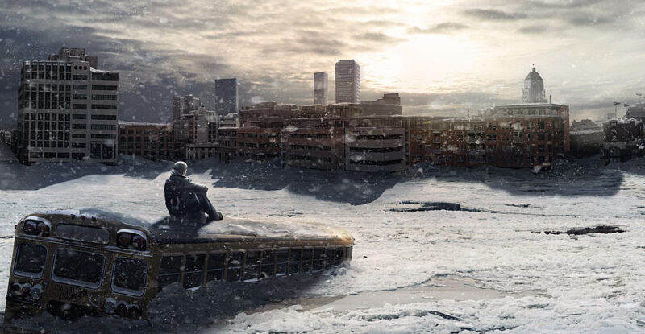

Описание
«Ядерной зимой» учёные называют то состояние нашей планеты, которое теоретически может наступить в случае ядерной войны. Предполагается, что в результате атомных взрывов в стратосферу попадет огромное количество сажи, и солнечный свет не сможет пробиться к земле сквозь плотные облака. Ядерная зима может длиться в течение многих лет, или даже десятилетий. В результате, сначала погибнут растения, потом животные. Еды перестанет хватать на всех. Люди вернутся к первобытному образу жизни, человек человеку станет волком, а жизнь в таком мире перестанет иметь ценность.
Действия
-Постарайтесь перебраться в сельскую местность. В городе быстро закончатся готовые припасы. Производство встанет навсегда, и единственный надежный способ получать продовольствие долгие годы - сельское хозяйство. -Температура по всей планете заметно снизится, так что не лишним будет утепление убежища, а также запасание теплой одеждой. -Относитесь к незнакомым людям с подозрением, кто-то может оказаться работорговцем, а кто-то вообще каннибалом. -При первой возможности сразу же запаситесь предметами первой помощи. -Желательно запастись оружием для самообороны. -Запасайте продовольствие. Если есть возможность - охотьтесь на оставшихся животных. -Насекомые очень живучи. Наверняка многие из них легко выживут и адаптируются, так что не стоит гнушаться есть даже их. -Собирайте всё, что может хоть как-то пригодиться для выживания и делайте запасы. Любая ткань, любые медикаменты, сырье, особенно энциклопедии будут полезны.